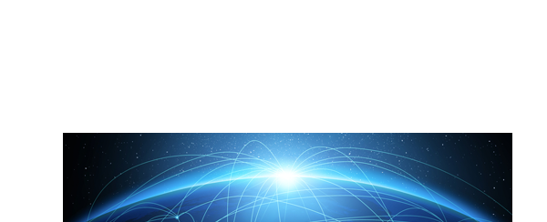
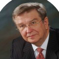

menu
BUSINESS
R&D
CONTACT US
PRESS
Sass
Components
Javascript
KR
EN
KOREAN
ENGLISH
CEO MESSAGE
HISTORY
GLOBAL R&D NETWORK
RESEARCH MATERIAL


Dr. Anthony J. Sinskey
과학 자문 위원장
M.I.T. 미생물학과 건강 과학 기술학 종신교수
Bio-economy 주요 300인 선정 (The Digest, 2013-14)
미국 최초의 바이오테크놀로지 회사 Genzyme
(히알루론산 최초 개발사)의 공동 설립자
more
Dr. Martin C. Mihm. Jr.
과학 자문 위원장
하버드 의과 대학 병리학(피부과학) 교수
WHO 흑색종 병리학 프로그램 패널 공동의장 (1992년~현재)
Brigham and Women’s Hospital 흑색종 프로그램
책임자 (Harvard Medical School 부속 의료원)
more
김찬화 박사
최고 연구 책임자
고려대학교 생명과학과 생명공학 석좌교수
아시아 태평양 Bio-Safety 협회 前 회장
한국 과학 기술 한림원 정회원
more
Kevin L. Ohashi, PhD.
과학 자문 위원
Phenolaeis (미국 Health and Wellness Bioactive
Technology社) 공동설립자, CEO, 이사
Direct Dermatology
(미국 원격 피부과 진단 및 처방 서비스 社) 이사
Pond Capital (미국 Private 투자펀드 社) 총괄 파트너
more
Glen Gong, PhD.
과학 자문 위원장
Microvascular Tissues (미국 Health Care
Business 社) 공동설립자, CEO, 이사
Direct Dermatology
(미국 원격 피부과 진단 및 처방 서비스 社) 이사, 전략 고문
CogENT Therapeutics
(미국 Private Medical Device 社) 공동설립자, COO
more